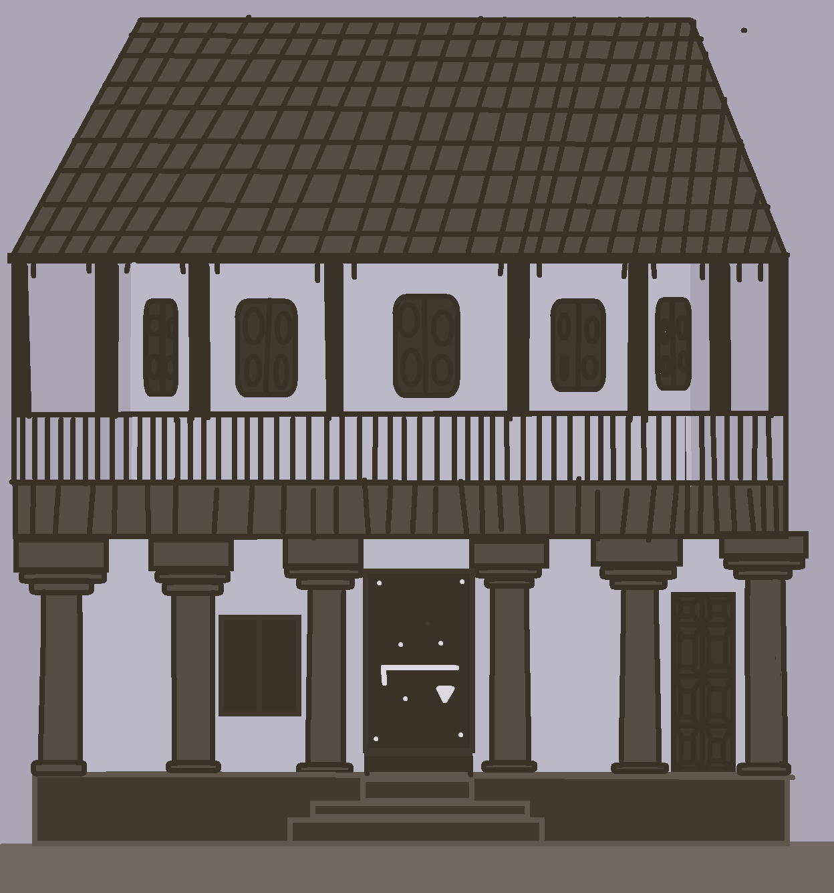
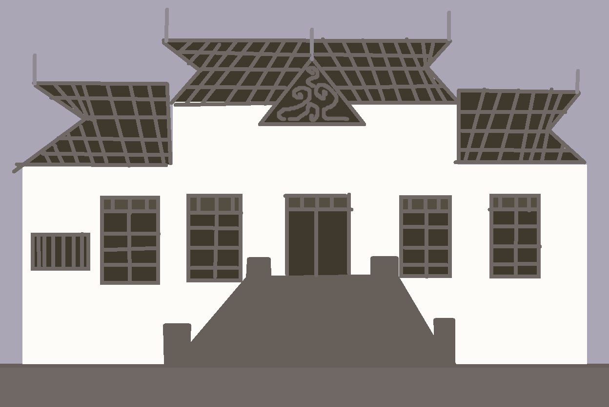

Nalukettu
Nalukettu is a traditional Kerala house built around a central courtyard called the Nadumuttam.

Kerala architecture is known for sloping roofs, wooden carvings, natural ventilation and beautiful courtyards.
🎨 My Palace Drawing
This is an original palace drawing created by me using Microsoft Paint. I enjoy studying Kerala's traditional architecture and historic palaces, and I like expressing that interest through my own artwork.


